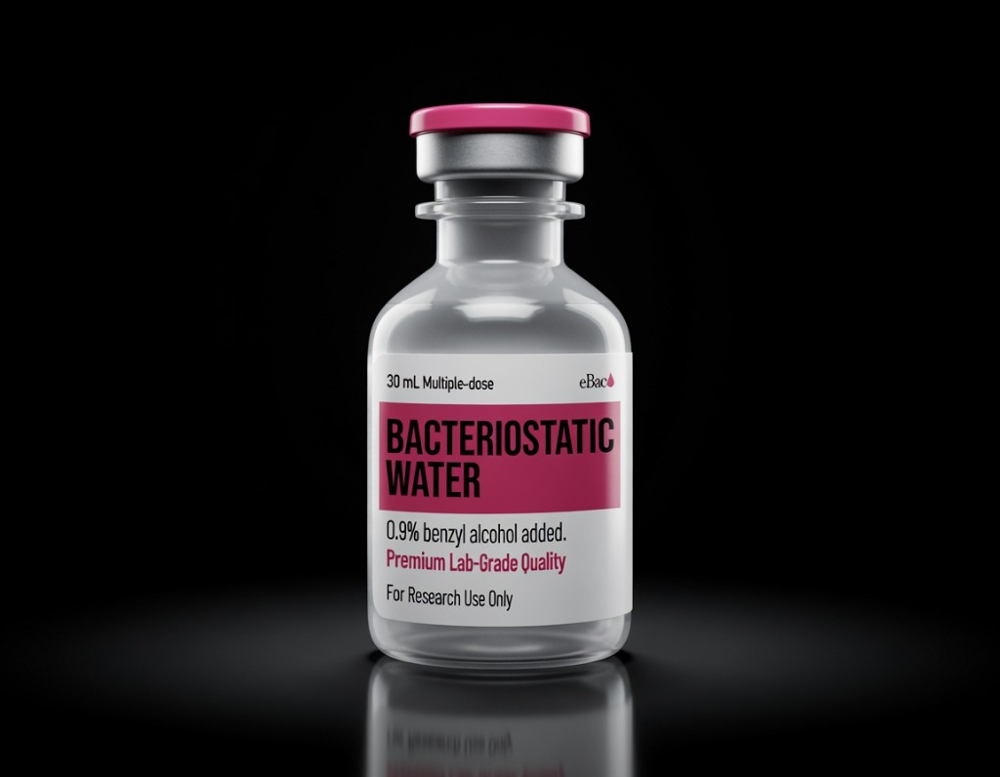

Bacteriostatic Water
Bacteriostatic water is sterile water for injection containing 0.9% benzyl alcohol as a preservative.
Research context
Bacteriostatic water is sterile water for injection containing 0.9% benzyl alcohol as a preservative. It is supplied as a sterile multi-dose diluent for reconstituting lyophilized research peptides and preparing in-vitro dilutions.
Elyria Bio supplies it as a sterile multi-dose solution produced to USP standards. Each lot is documented for sterility and identity, and a certificate is available on request.
Documented in-vitro applications
- Reconstitution of lyophilized research peptides
- Multi-dose laboratory diluent
- Sterile dilution for in-vitro preparations
Specifications
Representative release specification. Each shipped lot is documented on its own signed third-party certificate of analysis.
Frequently asked questions
What is bacteriostatic water?
Bacteriostatic water is sterile water for injection containing 0.9% benzyl alcohol as a preservative. It is used to reconstitute lyophilized research peptides and as a multi-dose laboratory diluent.
What is bacteriostatic water used for?
Bacteriostatic water is used to dissolve lyophilized research peptides for in-vitro work and as a sterile multi-dose diluent. The 0.9% benzyl alcohol preservative allows repeated withdrawals from a single vial.
Is Elyria Bio's bacteriostatic water tested?
Yes. Each lot is produced to USP standards and documented for sterility and identity, with a certificate available on request and full lot traceability.
How should bacteriostatic water be stored?
Store bacteriostatic water at controlled room temperature (2–25°C), away from direct light. After first puncture, the benzyl-alcohol preservative supports use for up to 28 days.
Documentation & traceability
Certificate of analysis
Signed by an independent US laboratory, reporting sterility and identity for this material’s lot.
Lot-traceable provenance
Each vial's printed lot number resolves to its matching certificate of analysis and full lot history.
Related materials
Bacteriostatic water is supplied as a laboratory diluent for qualified professionals. It is not a drug or medical product and has not been evaluated by the FDA for therapeutic use.